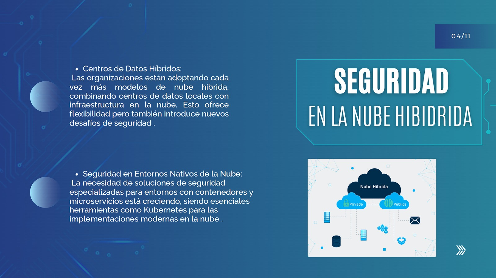

Proveedores Principales de Ciberseguridad
Palo Alto Networks
- Productos y Servicios: Firewalls de próxima generación, seguridad en la nube, protección de endpoints.
- Fortalezas: Innovación constante, soluciones integradas.
- Debilidades: Costos relativamente altos.
Cisco
- Productos y Servicios: Firewalls, sistemas de prevención de intrusiones, seguridad en la nube.
- Fortalezas: Amplia gama de productos, fuerte presencia en el mercado.
- Debilidades: Complejidad en la gestión de productos.
Fortinet
- Productos y Servicios: Firewalls, seguridad en la nube, protección de endpoints.
- Fortalezas: Alto rendimiento, soluciones rentables.
- Debilidades: Menor visibilidad de marca comparado con otros grandes proveedores.
Check Point Software Technologies
- Productos y Servicios: Firewalls, seguridad en la nube, protección de endpoints.
- Fortalezas: Soluciones robustas, enfoque en la innovación.
- Debilidades: Integración con productos de terceros puede ser complicada.

CrowdStrike
- Productos y Servicios: Protección de endpoints, respuesta a incidentes.
- Fortalezas: Tecnología avanzada, enfoque en la inteligencia de amenazas.
- Debilidades: Costos elevados para pequeñas empresas.
Tendencias Actuales en Ciberseguridad
- Zero Trust: Modelo de seguridad que asume que las amenazas pueden estar tanto dentro como fuera de la red. Requiere verificación continua de identidad y acceso.
- Seguridad en la Nube: Con el aumento del uso de servicios en la nube, la seguridad en este ámbito se ha vuelto crucial.
- Inteligencia Artificial y Machine Learning: Utilizados para detectar y responder a amenazas de manera más rápida y precisa.
- Automatización de la Seguridad: Implementación de soluciones automatizadas para responder a incidentes y gestionar la seguridad de manera eficiente.
- Protección de Endpoints: Enfoque en la seguridad de dispositivos finales como laptops, smartphones y tablets.
- Seguridad de IoT: Protección de dispositivos conectados a Internet, que son cada vez más comunes en hogares y empresas.
- Ciberseguridad en el Trabajo Remoto: Con el aumento del trabajo remoto, asegurar las conexiones y dispositivos fuera de la oficina es esencial.